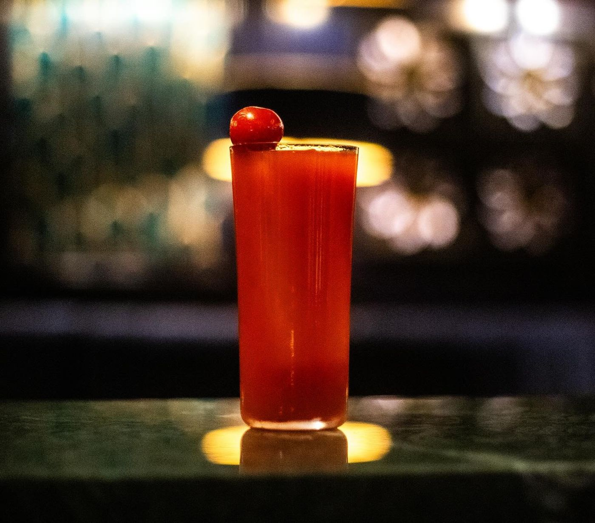

ROUGE
Bloody Mary – Piquant – Best Seller
At Perle Noire, everything is blue, and sea green, from the couches, to the lamps and curtains - so we wanted to make a very red cocktail that pops bright in the middle of it all.
Also, the bartender is excessively Italian, and needs his tomato drink.
